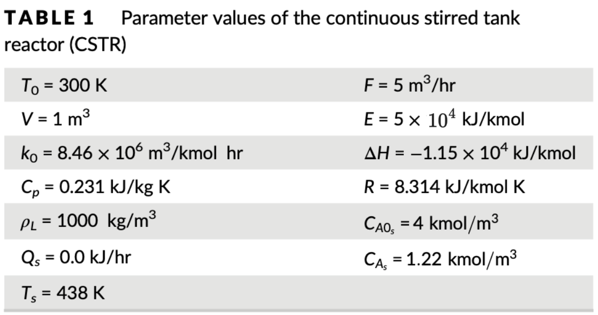

sys = CSTR()
cstr = SimpleCSimBox(sys, True, True, log_shift_state=True, log_period=0.05)params(k0=8460000.0, rho_L=1000.0, C_p=0.231, R=8.314, E=50000.0, F=5.0, T0=300.0, V=1.0, dH=-11500.0)draw_ellipse (ax=None, center=[0, 0], A=array([[1., 0.], [0., 1.]]), rho=1, color='b', figsize=(3, 3))
Draw an ellipse defined by a positive-definite matrix A and squared radius rho.
This example uses the CSTR chemical reactor. The dynamics being \[ \begin{split} \frac{d C_A}{dt} &= \frac{F}{V}(C_{A0} - C_A) - kC_A^2,\\ \frac{d T}{dt} &= \frac{F}{V}(T_0 - T) + \frac{-\Delta H}{\rho_L C_p}kC_A^2 + \frac{Q}{\rho_L C_p V}, \end{split} \] where \(k = k_0\exp(-\frac{E}{RT})\). We use the default values for the parameters from the paper.

ref:
CSTR (set_params_mannually:bool=False, params:Union[list[float],numpy.ndarray]=None)
Continuous Stirred Tank Reactor.
params(k0=8460000.0, rho_L=1000.0, C_p=0.231, R=8.314, E=50000.0, F=5.0, T0=300.0, V=1.0, dH=-11500.0)ref_inp = [4,0.]
ref_state = [1.22, 438]
cstr.initialize([0,0], ref_state, ref_inp, ref_state, True)
cstr.sim.AdvanceTo(2)
cstr.sys.plot_log(cstr.get_state_log_items())scipy
SimpleCSimBox has a method extract_dyn to extract the dynamical equation of sys (with its input u shifted, if possible). The returned function takes three inputs, i.e. xdot = f(t,x,u). By partially fixing u, we can call any preferable integration method, e.g. solve_ivp from scipy.integrate to get the trajectory of states in time.
The plug flow reactor (PFR) is governed by the following PDE \[ \begin{split} \frac{\partial C_A}{\partial t} &= -u\frac{\partial C_A}{\partial z} - kC_A\\ \frac{\partial T}{\partial t} &= -u\frac{\partial T}{\partial z} + \frac{-\Delta H}{\rho_L C_P}kC_A + \frac{U}{\rho_L C_P A} A_t(T_c - T) \end{split} \] where \(k = k_0\exp(-\frac{E}{RT})\).